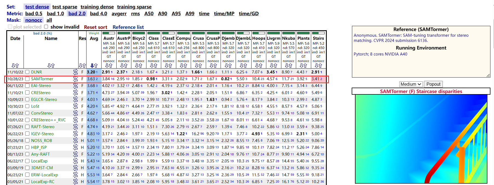
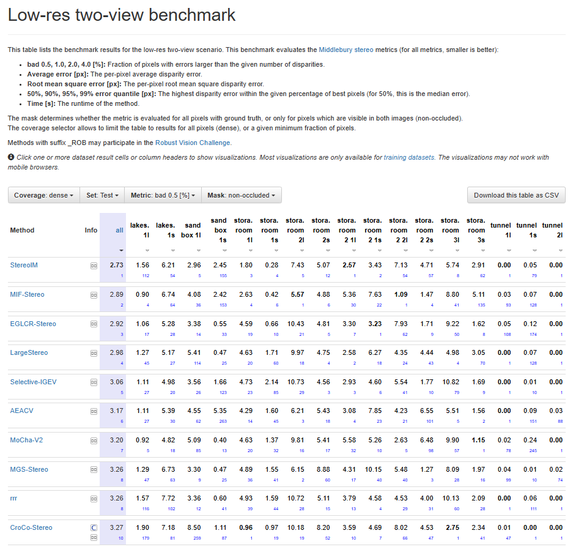

【English Resume】【中文简历】
Hello! My name is Ziyang Chen (陈子扬). I am currently pursuing a MSc in Computer Science & Technology at Guizhou University. My supervisor is
Prof. Yongjun Zhang (张永军).
I was guided by Prof. Hailin Li (李海林) when I was an undergraduate student.
My current research interest lies in intelligent transportation.
News 📝
Click to expand
- Oct. 1, 2024: I am awarded National Scholarship.
- Jun. 7, 2024: MoCha-V2 ranks 1st on Middlebury benchmark!🚀🚀🚀 I am the designer of this algorithm.
Click to expand the screenshots of stereo matching leaderboards
- 🚩Middlebury leaderboard (Jun. 7, 2024) 👇

- 🚩ETH3D leaderboard (Jun. 27, 2024) 👇

- 🚩Middlebury leaderboard (Jun. 7, 2024) 👇
- Feb. 27, 2024: MoCha-Stereo (抹茶算法) is accepted by CVPR2024!!! [Report]🔥🔥🔥 This is the first time that Guizhou University publishes its work in CVPR as the only corresponding institution.
It once held 1st on
KITTI 2015
and
KITTI 2012 Reflective
benchmarks for 245 days. 🚀🚀🚀 I am the designer of this algorithm.
Click to expand the screenshots of these leaderboards (Nov. 3, 2023)
- 🚩KITTI 2015 leaderboard 👇

- 🚩KITTI 2012 Reflective leaderboard 👇

- 🚩KITTI 2015 leaderboard 👇
Selected Publications 📖

Motif Channel Opened in a White-Box: Stereo Matching via Motif Correlation Graph
Ziyang Chen, Yongjun Zhang✉, Wenting Li, Bingshu Wang, Yong Zhao, C. L. Philip Chen📙Arxiv Report


MoCha-Stereo: Motif Channel Attention Network for Stereo Matching
Ziyang Chen†, Wei Long†, He Yao†, Yongjun Zhang✉, Bingshu Wang, Yongbin Qin, Jia Wu
📕IEEE Conference on Computer Vision and Pattern Recognition (CVPR) 2024
💡CCF-A 💡CAAI-A 💡H5-index: 440 (1st in CS, 1st in CV)

Surface Depth Estimation from Multi-view Stereo Satellite Images with Distribution Contrast Network
Ziyang Chen, Wenting Li✉, Zhongwei Cui, Yongjun Zhang✉
📘IEEE Journal of Selected Topics in Applied Earth Observations and Remote Sensing 2024
💡JCR Q1 💡SCI Q2 TOP 💡CAAI-B 💡IF: 4.7


FDN-MVS: Feature Distribution Normalization Network for Multi-View Stereo
Ziyang Chen, Yang Zhao, Junling He, Yujie Lu, Zhongwei Cui, Wenting Li, Yongjun Zhang✉
📘The Visual Computer 2024
💡JCR Q2 💡SCI Q3 💡CCF-C 💡CAAI-C 💡IF: 3.5

Description of symbols
- ✉ : Corresponding author
- † : Co-first author
- 📘: Journal
- 📕: Conference
- 📙: Others
Open Source Communications 🤝
Click to expand
| Occasion | Level | Form | Where | When | Introduction Title | Presentation Type | Material |
|---|---|---|---|---|---|---|---|
| The 34th IEEE/CVF Conference on Computer Vision and Pattern Recognition (CVPR2024) |Schedule |Scene |
International & CCF-A |
IEEE Conference Proceeding | Seattle, USA | Jun. 21, 2024 | MoCha-Stereo: Motif Channel Attention Network for Stereo Matching | Onsite Poster & Paper Included | |Poster |Paper⭐ (Representative Work) |
{kind=link}
Experience 🏃♂️

- 👨🎓 Guizhou University
- Sep. 2022 - Jun. 2025 (Expected)
- Master of Science in Computer Science
- Supervisor: Prof. Yongjun Zhang (张永军 教授)
- 🎖 Nov. 2024, Merit Student.
- 🎖 Sep. 2024, National Scholarship.

- 👨🎓 Huaqiao University
- Jun. 2018 - Jul. 2022
- Bachelor of Administration in Information Management and Information Systems
- Supervisor: Prof. Hailin Li (李海林 教授)
- Lab: HQUDM (华侨大学数据科学与创新管理研究团队), leading by Prof. Hailin Li
- 🎖 Jun. 2022, Excellent Graduation Thesis (优秀毕业论文). Rank: 1/48
- 🎖 Dec. 2021, Huaqiao University Scholarship.
Social Service 👨💼
Reviewer of- IEEE Transactions on Circuits and Systems for Video Technology (IEEE TCSVT)
- Knowledge-Based Systems (KBS)
- Neurocomputing
- Photogrammetric Engineering & Remote Sensing
- International Journal of Machine Learning and Cybernetics
- Electronics Letters
- IEEE 📧IEEE e-mail: ziyangchen@ieee.org